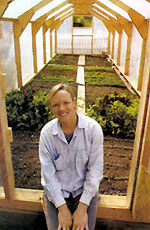
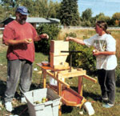
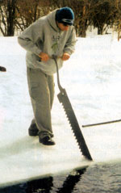

Readers' tips to live by
It must run in my genes because after my successful first winter of growing greens in a hay-bale-and-plastic cold frame, (see "My Rocky Mountain Winter Garden," December/January 2004), I was eager to try a real greenhouse. I wanted to walk into an enclosed space to tend my greens throughout the snowy Rocky Mountain winter. Rather than a hoop house with rounded sides, which wouldn't handle heavy snow, I decided I needed a wood-framed structure with a sloped roof and straight sides to withstand Colorado's windy, snowy winters.
With the help of a book my father, Eliot Coleman, gave me, Greenhouses for Homeowners and Gardeners by John W. Bartok, Jr., my boyfriend and I designed a 200-square-foot wood-framed, plastic-covered, free-standing greenhouse. We purchased the wood and building supplies from a local lumberyard. Because railroad ties border my 25-by-8-foot garden, we simply built a base on top of the railroad ties with 2-by-4s. Next, we drew a pattern on our deck to create the 7:12 roof pitch and 4-foot tall walls. Laying the 2-by-4s flat on the pattern, we cut the wall and roof rafters at a 32-degree angle and attached a 1/2-inch plywood gusset (taken from a pattern in the book) on either side of the 2-by-4s for structural support.
We used additional gussets at the wall-to-roof connection and at the ridge. We attached each frame at 4-foot centers to our base plate and slipped our 2-by-4 ridge into place. At one end of the greenhouse, we built a 2-by-5-foot door frame with a homemade, plastic-covered door and at the other, a 2-by-2-foot window frame with a similar homemade window. We covered the open end wall spaces with plastic and secured it with 1/2-inch plywood strips and screws. Finally, we were ready for the last but most tedious task, securing the large sheet of plastic over the entire green house. On a windless day, we draped the plastic over one side, secured it with 1/2-inch plywood strips, pulled it taut and attached it to the other side.
When I set foot into my greenhouse for the first time, I was thrilled to experience that wonderful, earthy greenhouse smell. Overall, the process was pretty simple, and it only took us about $325 and two weekends to complete the greenhouse. Last fall I planted arugula, green and red 'Oak Leaf' lettuces, spinach, mache, 'Bull's Blood' beets, Swiss chard and 'Winter Density' romaine lettuce. I had two planting dates-Sept. 1 and 15-which produced edible crops by Oct. 7 and 30, respectively.
The only hard part is remembering to open the door and window on warmer days for ventilation. A good rule of thumb I learned from my father is to always err on the cooler side with the greens. They can recuperate much easier from a little cold than from the wilting heat. After all, this is a winter greenhouse! The joy of being able to go out and cut fresh greens on a snowy morning far outweighs the effort it took to build it.
CLARA COLEMAN
Woody Creek, Colorado
Glue Remover
A nontoxic way to remove the sticky residue left by jar labels and other stickers is to rub the area with vegetable shortening and let it set for a few minutes. Then use a scraper or the dull edge of a knife to remove the majority. Next, wash it in soapy water and if it all doesn't come off, repeat the process. A couple of times should do it. This process will work on plastic as well as glass.
MARCELLA WHITE
Edmonton, Kentucky
Paper Mulch
I grew tired of junk mail and other paper cluttering my office, so I bought a shredder, shredded most of the paper and put it in the garden for mulch. When watered down, it makes a great mulch and has an added benefit: The birds love the shredded paper for nest building. Shortly after putting out the shredded mulch, we had two pairs of robins and a couple of cardinals build nests with the mulch in the nearby maple trees.
CAROL AHRENS
Portage, Wisconsin
Do You Split Your Own Firewood?
If you do, we need your thoughts on your favorite log-splitting equipment. Also welcome are tips that might help others tap this renewable energy source: splitting tools you've tried that didn't work as well as you hoped, places to find free wood if you don't own a woodlot and tricks that make cutting and splitting easier. We plan to use some of your comments in an article about log splitting.
Send your log-splitting advice to: letters@motherearthnews.com or Log Splitting; Mother Earth News; 1503 S.W. 42nd St.; Topeka, KS 66609.
Compostable Kitty Litter
Having three cats is important for mice control on our homestead. But litter is expensive and does not compost: Litter we threw out four years ago still sits on the ground where we put it.
Because we use wood shavings for our horses' bedding, I decided to try them in the covered litter box in our bathroom. I was doubtful about whether our 13-year-old Siamese cat, Nutmeg, would be willing to use it. She can be very fussy at times! She does like it, although sometimes it makes her sneeze.
In our area, a 25-pound bale of wood shavings costs $3.99, and if we change it daily, the shavings last more than two months for three cats. I keep a mat under the box, so the shavings that get tracked out usually end up on the mat instead of the floor. It's a snap to clean up and there is absolutely no litter smell! And best of all, the shavings and cat waste compost back into the ground.
KATHLEEN G. LUPOLE
Smithville Flats, New York
Rain Catcher
After reading your article "Harvesting the Rain" (August/September 2003), I wanted to describe the cistern I built 13 years ago to catch the rain falling from the eaves of our house. I made a 4-foot-tall, 8-by-12-foot box out of 2-by-20-inch planks. I lined the box with plywood, then lined this box with a 16-by-20-foot plastic tarp. I replaced the tarp after 10 years, even though it was not leaking. I use a siphon and pump to tap into the water, so the liner has no openings.
T he cistern has a cover made of 2-by-6-inch lumber to keep the sunlight away from the liner and, so far, it works great.The cistern cost about $500 to build and it holds 2,700 gallons, which has been enough to water the garden every year since I built it.
STEPHEN DERYNCK
Cary, North Carolina
An Easy Pull
An old toboggan works great to move rocks, branches or other heavy objects around the yard. It's easy to load and pull on the grass or the snow.
G. BRUCE MCSPADDEN
Hamilton, Ontario
Pressin' Apples for Sweet Cider
Anyone who has grown up in apple-orchard country knows one of the delights of the harvest season: freshly squeezed raw apple cider. Years ago, every little fruit stand sold the sweet, amber nectar in the fall. Unfortunately, thanks to new government regulations to protect the public from acid-tolerant strains of E. coli bacteria (that may have evolved because of the unnatural high-grain diets fed to cattle to fatten them quickly in feedlots), we can no longer purchase fresh, raw apple cider. If someone wishes to sell "cider," the raw juice must be put through a pasteurization process that damages the distinct, tangy cider flavor.
We grew up in Pennsylvania where my sister and I eagerly awaited the ripening of apples that heralded the apple cider season. We dreamed wistfully of the cider we drank as children. Two years ago, my sister ordered a handsome, well-made press from a carpenter in Oregon. In October 2002, we put the press to the test and found it met our every hope and expectation.
Cider tastes only as good as the apples used in the process. A mix of sweet and tangy apple varieties will produce a tasty cider, provided the apples have ripened and have a good flavor of their own.
Using the cider press involves two steps: The apples are ground into a lumpy, juicy mush, then the mush is squeezed to separate the juice from the pulp. The press comes with two wooden pails made from 1-inch-wide slats set 1/2-inch apart. An old pillowcase fits nicely into the slatted pail, preventing the pulp from sliding out through the slats, but allowing the juice to escape through the cloth.
T o make homemade cider, my sister and I feed apples into the grinder. When we have a pailful of apple pulp, my brother-in-law moves the pail over to the squeezing device, puts a round, wooden lid on top of the pulp and then turns the screw that forces the lid down through the pail, squeezing the apples in the process. Fresh apple cider spurts out through the slats in the pail and onto the press floor, which is slightly tilted to allow the liquid to flow out of a small opening and into the containers below. We pour the pressed cider through a sieve and into clean, plastic gallon milk jugs. In a little more than an hour, we squeeze more than five gallons of pure heaven from a 50-pound tub of apples.
We hose down the press, put the pulp out for the deer to eat and share our bounty with our neighbors. We no longer have to just dream about our favorite fall treat.
LOIS KERR
Crane, Montana
You can purchase a cider press like this one at www.correllciderpresses.com or by calling (541) 935-3825. Prices range from $500 to $800, depending on size.
- MOTHER
Ice Cutting
Over the millennia we have developed many strategies for food preservation, including drying, salting, smoking, pickling, canning and natural refrigeration in root cellars and spring houses. With the introduction of ice saws in the 19th century, a new form of food preservation was born. Ice cutting, storage and shipping became a huge industry in the late 19th and early 20th century. Ice blocks were delivered directly to home kitchens and were even shipped overseas. With the invention of the electric refrigerator in the 1930s, the ice industry faded and died out.
In some parts of the country, ice is still useful for food preservation, and more importantly, it uses no energy.
One of the most enjoyable aspects of ice harvesting is the opportunity for a winter get-together. Our friends and neighbors look forward to joining us at The Smiling Skunk Farm for our annual ice-cutting party. Everyone helps to cut, haul and store the ice, and then we reward ourselves by visiting over a down home potluck dinner. It just doesn't get any better than that.
You can harvest ice from a frozen river or pond that is covered with at least 6 inches of solid ice. We cut the ice with an ice saw into 18-by-18-inch blocks and pull them from the water with ice tongs.
We then load the blocks onto toboggans, haul them to the ice house, and stack and pack them with sawdust on all sides. When warm weather comes, we take the ice to the icebox in our kitchen and enjoy the simplicity of natural refrigeration.
RICHARD and AIMEE DOUGLAS
Chateaugay, New York
For more on ice houses, go to http://www.motherearthnews.com and click on `Archives." Search for "ice house."
- MOTHER
Mother Earth News
|
 Robbie George Clara Coleman loves her new greenhouse |
 Lois Kerr |
 Richard Douglas |